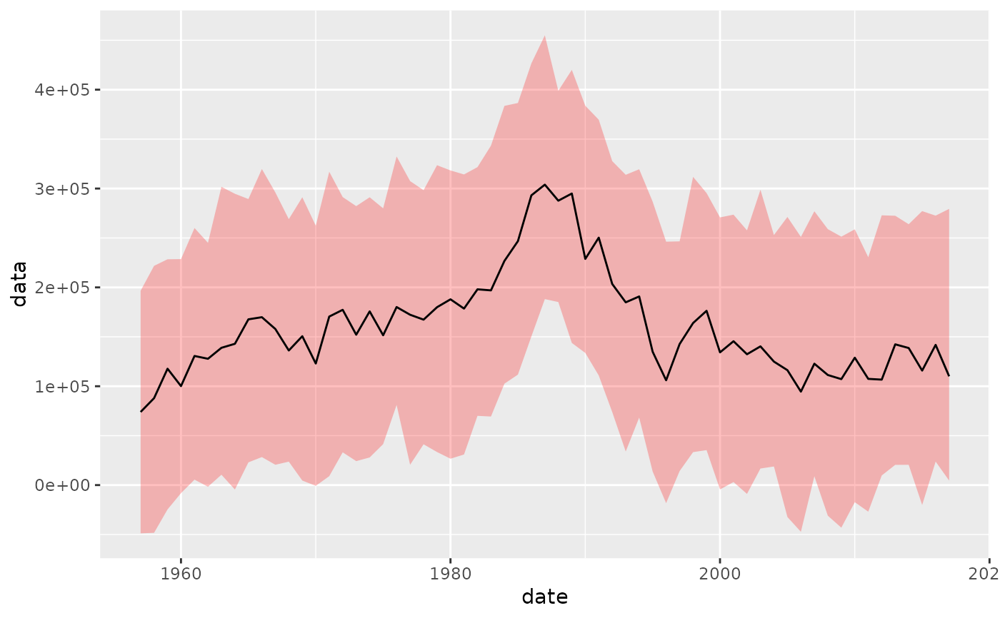
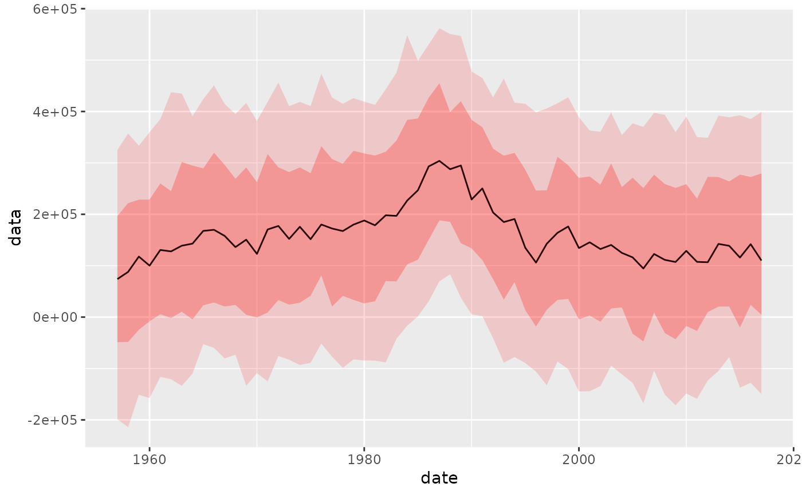
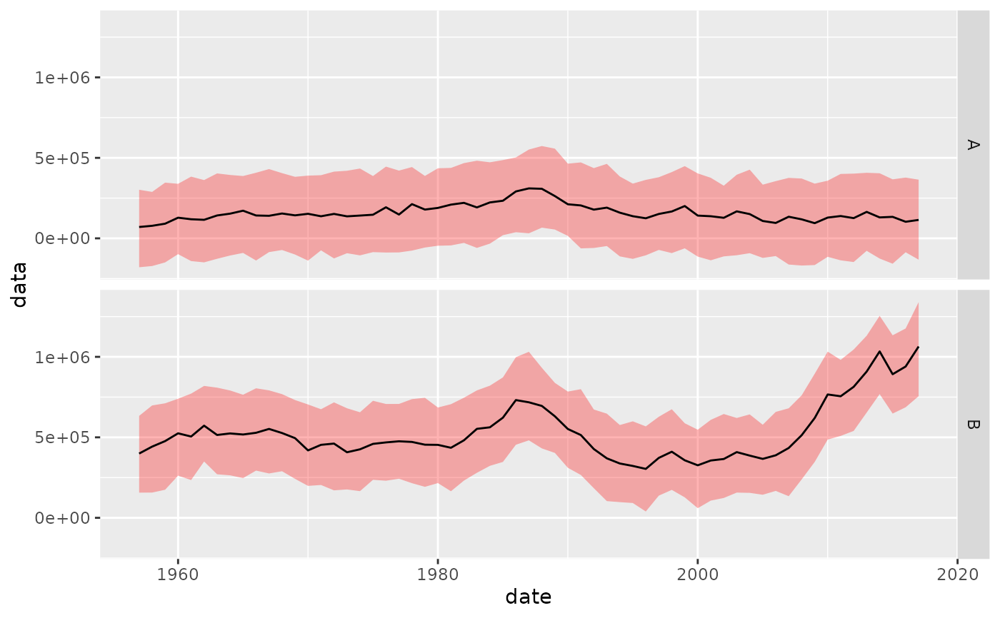
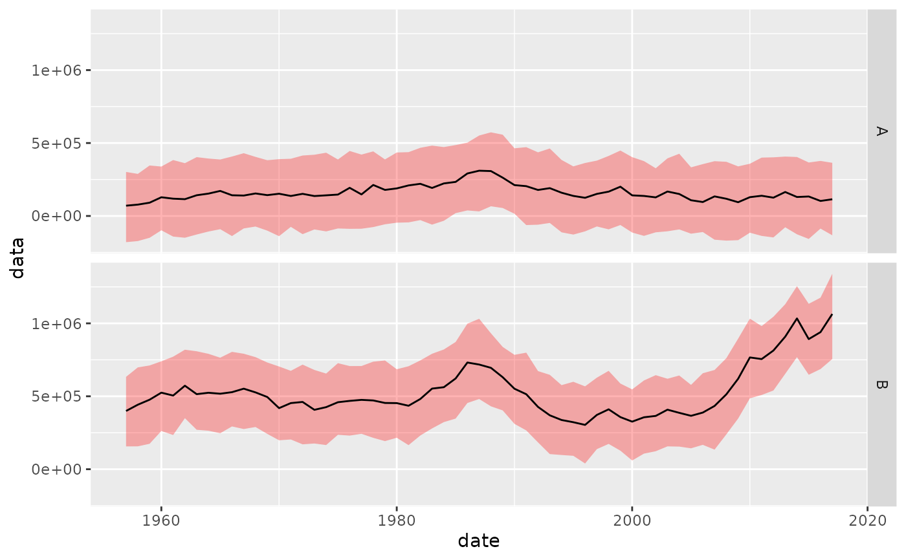

This `geom` calculates sampling quantiles and draws a ribbon for the quantile range plus a line for the median (50% quantile).
geom_flquantiles(
mapping = NULL,
data = NULL,
stat = "FLQuantiles",
position = "identity",
show.legend = NA,
inherit.aes = TRUE,
na.rm = FALSE,
probs = c(0.1, 0.5, 0.9),
alpha = 0.5,
...
)
stat_flquantiles(
mapping = NULL,
data = NULL,
geom = "line",
position = "identity",
na.rm = TRUE,
show.legend = NA,
inherit.aes = TRUE,
...
)Arguments
- mapping
Set of aesthetic mappings created by
aes(). If specified andinherit.aes = TRUE(the default), it is combined with the default mapping at the top level of the plot. You must supplymappingif there is no plot mapping.- data
The data to be displayed in this layer. There are three options:
If
NULL, the default, the data is inherited from the plot data as specified in the call toggplot().A
data.frame, or other object, will override the plot data. All objects will be fortified to produce a data frame. Seefortify()for which variables will be created.A
functionwill be called with a single argument, the plot data. The return value must be adata.frame, and will be used as the layer data. Afunctioncan be created from aformula(e.g.~ head(.x, 10)).- stat
The statistical transformation to use on the data for this layer, either as a
ggprotoGeomsubclass or as a string naming the stat stripped of thestat_prefix (e.g."count"rather than"stat_count")- position
Position adjustment, either as a string naming the adjustment (e.g.
"jitter"to useposition_jitter), or the result of a call to a position adjustment function. Use the latter if you need to change the settings of the adjustment.- show.legend
logical. Should this layer be included in the legends?
NA, the default, includes if any aesthetics are mapped.FALSEnever includes, andTRUEalways includes. It can also be a named logical vector to finely select the aesthetics to display.- inherit.aes
If
FALSE, overrides the default aesthetics, rather than combining with them. This is most useful for helper functions that define both data and aesthetics and shouldn't inherit behaviour from the default plot specification, e.g.borders().- na.rm
If
FALSE, the default, missing values are removed with a warning. IfTRUE, missing values are silently removed.- probs
Quantiles to compute and draw, defaults to c(0.10, 0.90).
- alpha
Transparency for quantile ribbon.
- ...
Other arguments passed on to
layer(). These are often aesthetics, used to set an aesthetic to a fixed value, likecolour = "red"orsize = 3. They may also be parameters to the paired geom/stat.- geom
The geometric object to use to display the data, either as a
ggprotoGeomsubclass or as a string naming the geom stripped of thegeom_prefix (e.g."point"rather than"geom_point")
Details
As this `geom` outputs two layers, although based on different `geoms`, interactions between common parameters need to be considered. The `fill` parameter will only affect the quantile range `ribbon`, but `colour` will be passed to both the `ribbon` and median `line` layers. The defaults are no lines on the quantiles and "black" for the median line. The `alpha` value has been hard coded to 1 for the median line, so only affects the quantile `ribbon`. To change this, call `stat_flquantiles` directly, as in the examples below.
`stat_flquantiles` will return between one and three `y` values depending on the number of quantiles requested. If two quantiles are to be calculated, it will return the corresponding `ymin` and `ymax`, to be used with, for example, `geom_ribbon`. If only one quantile is to be calculated, it will be returned as `y`, to be used typically by `geom_line`. Finally, if three values are passed in the `probs` argument, all of the above will be returned, in the right order.
Aesthetics
`geom_flquantiles` understands the following aesthetics (required aesthetics are in bold): - `*x*` - `*y*` - `alpha` - `colour` - `fill` - `group` - `linetype` - `linewidth` where some of them apply to the ribbons and some of them to the lines.
Computed variables
- y
quantile, if only one requested or central one when if three
- ymin
lower quantile, if two or three requested
- ymax
upper quantile, if two or three requested
Examples
data(ple4)
flq <- rnorm(250, catch(ple4), 200000)
ggplot(flq, aes(x=date, y=data)) +
geom_flquantiles(probs=c(0.25, 0.50, 0.75), fill="red", alpha=0.25)

# Draw two quantiles with two calls to geom_flquantiles
ggplot(flq, aes(x=date, y=data)) +
geom_flquantiles(probs=c(0.25, 0.50, 0.75), alpha=0.25, fill="red") +
geom_flquantiles(probs=c(0.10, 0.90), alpha=0.15, fill="red")

# Use it on an FLQuants, colouring by their name
flqs <- FLQuants(A=rnorm(250, catch(ple4), 200000),
B=rnorm(250, stock(ple4), 200000))
ggplot(flqs, aes(x=date, y=data, colour=qname)) +
geom_flquantiles(probs=c(0.10, 0.50, 0.90), aes(fill=qname), alpha=c(0.30))
 # Or facet them
ggplot(flqs, aes(x=date, y=data)) +
geom_flquantiles(probs=c(0.10, 0.50, 0.90), fill="red", alpha=c(0.30)) +
facet_grid(qname~.)

# For greater control, call stat_flquantiles directly with a geom
ggplot(flq, aes(x=year, y=data)) +
stat_flquantiles(probs=c(0.10, 0.90), geom = "ribbon",
fill="yellowgreen", alpha=0.30) +
stat_flquantiles(probs=c(0.01), geom = "line",
colour = "green4", linetype=3) +
stat_flquantiles(probs=c(0.99), geom = "line",
colour = "green4", linetype=3) +
stat_flquantiles(probs=c(0.25, 0.75), geom = "ribbon",
fill="green4", alpha=0.30) +
stat_flquantiles(probs=c(0.50), geom = "line", linewidth=1.5,
colour = "lightgreen") +
stat_flquantiles(probs=c(0.50), geom = "line",
colour = "darkgreen")
# Or facet them
ggplot(flqs, aes(x=date, y=data)) +
geom_flquantiles(probs=c(0.10, 0.50, 0.90), fill="red", alpha=c(0.30)) +
facet_grid(qname~.)

# For greater control, call stat_flquantiles directly with a geom
ggplot(flq, aes(x=year, y=data)) +
stat_flquantiles(probs=c(0.10, 0.90), geom = "ribbon",
fill="yellowgreen", alpha=0.30) +
stat_flquantiles(probs=c(0.01), geom = "line",
colour = "green4", linetype=3) +
stat_flquantiles(probs=c(0.99), geom = "line",
colour = "green4", linetype=3) +
stat_flquantiles(probs=c(0.25, 0.75), geom = "ribbon",
fill="green4", alpha=0.30) +
stat_flquantiles(probs=c(0.50), geom = "line", linewidth=1.5,
colour = "lightgreen") +
stat_flquantiles(probs=c(0.50), geom = "line",
colour = "darkgreen")